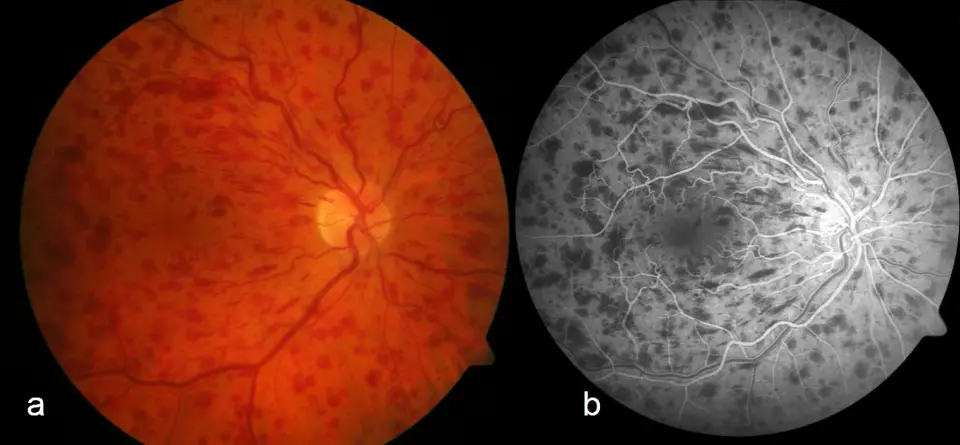

DX.6 — Occlusion veineuse rétinienne
L’occlusion veineuse rétinienne provoque une baisse visuelle brutale et indolore d’un œil, chez un sujet âgé porteur de facteurs de risque vasculairesS1. Elle menace la vision par l’œdème maculaire et par la néovascularisation, dont le glaucome néovasculaire est la forme la plus graveS1.
1. Définition
Le Collège des ophtalmologistes universitaires de France (COUF) définit en 2025 l’occlusion veineuse rétinienne (OVR) comme une obstruction du système de drainage veineux de la rétineS1. Le Royal College of Ophthalmologists (RCOphth) précise en 2022 qu’une thrombose obstrue la veine centrale, une hémiveine centrale ou une branche veineuseS2. Trois formes se distinguent donc selon le siège : l’occlusion de la veine centrale (OVCR), l’hémi-occlusion centrale et l’occlusion de branche veineuse (OBVR)S1.
2. Épidémiologie (Suisse, puis Europe)
Les Hôpitaux universitaires de Genève (HUG) classent l’OVR comme l’affection vasculaire rétinienne la plus fréquente après la rétinopathie diabétiqueS4. Les HUG observent qu’elle survient surtout après 55 ans et que l’OBVR est cinq fois plus fréquente que l’OVCRS5S6. Selon une méta-analyse mondiale, la prévalence de toute OVR atteint 0,77 % entre 30 et 89 ans en 2015S10. Les chiffres de fréquence, les facteurs de risque et l’histoire naturelle expliquent pourquoi le médecin de famille rencontre cette maladie chez le sujet âgé hypertendu.
Chiffres de fréquence : Suisse, puis Europe et monde
Les repères genevois décrivent le rang et la répartition des formes ; les prévalences viennent du référentiel français et d’une méta-analyse mondialeS4S1S10.
| Donnée | Valeur | Population, année | Source |
|---|---|---|---|
| Rang parmi les maladies vasculaires rétiniennes | Deuxième, après la rétinopathie diabétique | Genève, HUG, 2025 | [S4] |
| Rapport OBVR / OVCR | L’OBVR est cinq fois plus fréquente | Genève, HUG, 2025 | [S5] |
| Prévalence de l’OVCR | 0,1 à 0,4 % | Populations de référence, COUF 2025 | [S1] |
| Prévalence de l’OBVR | 0,6 à 1,2 % | Populations de référence, COUF 2025 | [S1] |
| Prévalence de toute OVR | 0,77 % (IC 95 % 0,55–1,08), soit 28,06 millions de personnes | Monde, 30–89 ans, 2015 | [S10] |
| Prévalence OBVR et OVCR | 0,64 % et 0,13 % | Monde, 30–89 ans, 2015 | [S10] |
| Incidence cumulée | 0,86 % à 5 ans ; 1,63 % à 10 ans | Méta-analyse, 2019 | [S10] |
| Sujets jeunes | 0,26 % à 30–39 ans ; 0,44 % à 40–49 ans | Monde, cité par le RCOphth 2022 | [S2] |
| Âge des OVCR | 75 % des cas surviennent après 60 ans | COUF 2025 | [S1] |
La prévalence augmente avec l’âge et ne diffère pas significativement entre les sexes, ce que le COUF confirme en décrivant une atteinte équivalente des hommes et des femmesS10S1.
Facteurs de risque : ce qu’ils signifient pour la décision
L’âge reste le principal facteur de risque, car l’artériosclérose épaissit la paroi des artères qui compriment les veines voisinesS1. L’hypertension artérielle est le facteur le plus fort, avec un rapport de cotes de 2,82 dans la méta-analyse mondialeS10. Les HUG ajoutent l’hypercholestérolémie, le diabète, le tabagisme, l’obésité, l’hypertonie oculaire et le glaucome chroniqueS6. Le glaucome primitif à angle ouvert agit probablement par une pression intraoculaire qui freine la sortie veineuse au niveau de la lame cribléeS1.
Les HUG citent aussi les maladies qui augmentent la coagulabilité, comme le lupus, la sarcoïdose, la tuberculose, la syphilis ou le myélomeS6. Le RCOphth indique cependant que l’OVR n’est pas liée de façon significative aux thromboses veineuses systémiques ni à leurs facteurs de risqueS2. Le diabète n’est pas plus fréquent chez ces patients que dans la population générale, mais son dépistage découvre des diabètes méconnusS2. Le facteur de risque oriente donc la prévention cardiovasculaire, sans désigner à lui seul la cause individuelle de l’occlusion.
Histoire naturelle et enjeux de santé publique
Les formes non ischémiques représentent environ les trois quarts des OVCR, et les formes ischémiques environ un quartS1. Une OVCR non ischémique guérit dans la moitié des cas, avec une acuité et un fond d’œil normalisés en 3 à 6 moisS1. Le RCOphth rapporte que 30 % des OVCR non ischémiques deviennent ischémiques en 3 ansS2. Les HUG observent que 5 à 12 % des patients atteints d’un œil développent une OVR dans l’autre œilS6.
Le RCOphth signale des associations discordantes avec l’accident vasculaire cérébral, et une maladie veineuse périphérique chez 3 % des patients avant leur OVCRS2. Ces associations traduisent des facteurs de risque partagés, comme l’hypertension et le diabète, et non une causalité démontréeS2. L’enjeu de santé publique tient donc à la fois à la vision, menacée par l’œdème et la néovascularisation, et au risque cardiovasculaire du patient.
3. Physiopathologie
Le mécanisme ne se comprend qu’après la base anatomique des veines rétiniennes. Le sang continue d’arriver par les artères alors qu’il ne s’évacue plus, ce qui élève la pression veineuse et provoque hémorragies et œdèmeS4. La cascade en quatre temps relie ensuite chaque lésion à l’examen qui la montre et au traitement qui la corrige.
Base à connaître : veine centrale, lame criblée et croisements
La veine centrale de la rétine draine toute la rétine ; elle quitte l’œil par la tête du nerf optique et traverse la lame cribléeS1S2. Dans ce canal étroit, elle chemine contre l’artère centrale ; une paroi artérielle épaissie par l’athérosclérose peut donc la comprimerS1. Une résistance accrue en arrière de la lame criblée pourrait aussi ralentir le flux, ce qui explique le rôle d’une pression intraoculaire élevéeS1.
Les branches veineuses croisent les artérioles dans la rétine ; à chaque croisement, artère et veine partagent une gaine adventicielle communeS1S2. Une artériole artérioscléreuse écrase donc la veine sous-jacente : c’est le « signe du croisement », dont l’OBVR représente le stade compliquéS1. Le territoire occlus prend une forme triangulaire, dont la pointe se situe au croisement responsableS1. Plus ce croisement est proche de la papille, plus le territoire atteint est étenduS1.
La macula, centre de la rétine, permet de lire, de reconnaître les visages et de fixer un objetS4. Une occlusion qui draine la macula entraîne donc une baisse d’acuité, même si son territoire est petitS1. À l’inverse, une branche qui épargne la macula peut laisser une acuité normale et passer inaperçueS1S5.
Cascade en quatre temps
- Amorce. Une thrombose se forme au point de compression, dans la lame criblée pour l’OVCR et au croisement artérioveineux pour l’OBVRS2.
- Développement. La pression capillaire augmente, la perméabilité croît et du liquide et du sang fuient dans la rétineS2.
- Installation. La non-perfusion capillaire crée une ischémie, qui augmente la production de facteur de croissance de l’endothélium vasculaire (VEGF) et d’autres cytokinesS2.
- Maintien. Le VEGF entretient la fuite maculaire et stimule des néovaisseaux, surtout iriens et angulaires dans l’OVCR, surtout rétiniens dans l’OBVRS2S1.
L’œdème maculaire constitue la cause la plus fréquente de baisse visuelle, devant l’ischémie fovéolaireS2. Les néovaisseaux exposent au glaucome néovasculaire, à l’hémorragie du vitré et au décollement de rétine tractionnelS2. Le degré d’ischémie dépend surtout du degré de thrombose veineuse ; il varie d’un patient à l’autre et change dans le tempsS2.
Corrélation : perturbation → exploration → thérapeutique
Chaque perturbation possède son propre examen et son propre traitement ; le tableau évite donc de traiter l’œdème en oubliant l’ischémieS1S2.
| Perturbation | Exploration qui la montre | Traitement qui la corrige (mécanisme) |
|---|---|---|
| Stase veineuse et fuite capillaire | Le fond d’œil montre veines dilatées et hémorragiesS1 | Aucun traitement ne rétablit une circulation parfaiteS8 |
| Œdème maculaire (VEGF) | L’OCT mesure l’épaisseur et les logettesS1S2 | Les anti-VEGF ou l’implant de dexaméthasone réduisent la diffusion capillaireS1 |
| Non-perfusion capillaire | L’angiographie à la fluorescéine ou l’OCT-angiographie la cartographientS1S2 | La photocoagulation détruit la rétine ischémique et réduit la production de VEGFS1 |
| Néovaisseaux iriens et angulaires | La lampe à fente et la gonioscopie les détectentS2 | La photocoagulation panrétinienne, aidée d’un anti-VEGF, les fait régresserS2 |
| Hypertonie du glaucome néovasculaire | Le tonomètre la mesureS1 | Les hypotonisants locaux et l’acétazolamide abaissent la pressionS1 |
4. Démarche diagnostique
Une baisse visuelle monoculaire brutale reste une urgence tant que sa cause n’est pas établie ; le médecin écarte donc d’abord les diagnostics qui menacent l’œil ou la vie. L’occlusion artérielle rétinienne (🚩 E1) et l’artérite à cellules géantes (🚩 E2) passent avant l’OVR dans le cours du symptôme. Le tableau discriminant et le raisonnement pas à pas montrent ce qui tranche entre ces diagnostics.
Diagnostics discriminants : les graves d’abord
Le fond d’œil dilaté tranche la plupart des situations, car le diagnostic positif d’OVR repose uniquement sur luiS1.
| Diagnostic | Élément qui tranche | Piège | Conduite si positif |
|---|---|---|---|
| 🚩 Occlusion artérielle rétinienne (DX.9) | La rétine est pâle et ischémique, sans hémorragies diffuses ni veines congestives | Une baisse brutale, indolore et un œil blanc existent dans les deux maladiesS1 | La filière neurovasculaire urgente s’applique (DX.9) |
| 🚩 Artérite à cellules géantes (DX.10) | L’âge, les céphalées et les signes généraux orientent ; le fond d’œil ne montre pas une OVR | Une OVR découverte n’exclut pas une autre cause chez le sujet âgé | La conduite urgente de DX.10 s’applique |
| 🚩 Glaucome néovasculaire | L’œil est rouge et douloureux, l’iris porte des néovaisseaux et la pression monteS1 | Il complique une OVCR ischémique connue, parfois des mois plus tardS1 | La pression s’abaisse et la photocoagulation panrétinienne se fait en urgenceS1 |
| Hémorragie du vitré | Des myodésopsies et une baisse brutale masquent le fond d’œilS1 | Elle peut révéler une OVR ischémique néovasculariséeS1 | L’échographie et l’avis rétinien recherchent un décollement (DX.7) |
| Rétinopathie diabétique | Les lésions sont bilatérales et diffuses, sans territoire veineux systématisé | Les deux maladies coexistent chez le diabétique âgéS1 | L’ophtalmologue classe chaque mécanisme séparément |
Raisonnement pas à pas et erreur du débutant
- Mécanisme. Une veine bouchée laisse arriver le sang artériel, qui stagne et fuit ; la rétine devient donc rouge, hémorragique et œdémateuseS4.
- Signe. Des hémorragies dans les quatre quadrants désignent la veine centrale, tandis qu’un triangle hémorragique désigne une brancheS1.
- Examen. L’OCT mesure l’œdème maculaire, puis l’angiographie classe la perfusionS1.
- Décision. L’œdème justifie des injections intravitréennes, tandis qu’une ischémie étendue impose le laser et une surveillance rapprochéeS1.
L’erreur classique consiste à croire qu’une OVR « veineuse » ne presse pas et à la confondre avec une occlusion artérielle. Une patiente de 78 ans avec une acuité de 3/10 et des hémorragies diffuses représente l’OVCR non ischémique du COUFS1. Le débutant évite l’erreur en décrivant la couleur et la distribution du fond d’œil avant de nommer le diagnostic.
5. Anamnèse ciblée et drapeaux rouges
Le symptôme principal est une baisse d’acuité unilatérale, brutale et indolore, dans un œil blancS1S4. Une OBVR produit plutôt un déficit sectoriel, parfois découvert au hasard d’un examen de routineS1S5. Une douleur avec œil rouge ou des corps flottants nouveaux sont atypiques et signalent une complication. Les questions de terrain préparent le bilan et la sécurité des injections ; le tableau des drapeaux rouges fixe l’action de chacun.
Baisse d’acuité : caractérisation
| Caractère | Forme typique |
|---|---|
| Siège | Un seul œil est touché ; l’atteinte bilatérale est rare et fait chercher une cause généraleS1 |
| Début | Le début est brutal, sans prodrome ; il s’installe parfois en quelques jours ou semainesS4 |
| Intensité | Elle va de la simple perception lumineuse à une acuité normaleS1 |
| Douleur | La baisse est indolore, et l’œil reste blancS1S4 |
| Signes associés | Le patient décrit des taches noires (scotomes) ou un champ visuel réduitS4 |
Le tableau est typique parce que l’œdème et les hémorragies n’irritent ni la cornée ni l’uvée ; la douleur manque doncS1. L’intensité renseigne sur la forme : une acuité inférieure à 1/10 traduit le plus souvent une forme ischémique sévèreS1. Une acuité supérieure à 2/10 oriente vers une forme non ischémiqueS1. L’acuité initiale prédit le mieux la récupération, selon les HUGS7.
Déficit sectoriel du champ visuel
Une OBVR entraîne un déficit sectoriel du champ visuel, avec ou sans baisse d’acuitéS1. Le retentissement dépend de la topographie plus que de l’étendue ; une petite occlusion maculaire gêne donc davantage qu’un large territoire périphériqueS1. Le déficit siège dans la moitié du champ opposée au territoire occlus, puisque l’image rétinienne est inversée. Le symptôme est typique s’il est fixe, unilatéral et de début brutal ; un déficit binoculaire homonyme oriente au contraire vers une lésion des voies optiques.
Douleur et œil rouge : un signe atypique
Une OVR simple ne fait pas mal ; une douleur oculaire intense avec œil rouge évoque donc un glaucome néovasculaireS1. Les néovaisseaux de l’angle bloquent l’écoulement de l’humeur aqueuse et la pression monte brutalementS1. L’œdème de cornée qui en résulte trouble encore la vue, et les douleurs peuvent devenir très importantesS5. Ce glaucome survient dès le troisième mois d’une OVCR ischémique, ou 1 à 2 ans plus tard sous anti-VEGFS1. Après une injection, une douleur croissante, une rougeur ou une photophobie évoquent au contraire une endophtalmie ou une inflammationS11.
Corps flottants nouveaux
Des myodésopsies avec baisse brutale signalent une hémorragie du vitré, venue de néovaisseaux prérétiniens ou prépapillairesS1. Ces néovaisseaux apparaissent dans 25 % des OVCR ischémiques, selon un mécanisme proche de la rétinopathie diabétique proliféranteS1. Dans l’OBVR ischémique, ils saignent rarement, et plutôt dans les mois qui suivent l’occlusionS1. Le sang se résorbe le plus souvent, mais il masque la rétine et peut cacher un décollementS5.
Questions de terrain et leur raison
| Question | Raison physiopathologique ou décisionnelle |
|---|---|
| Le patient a-t-il plus de 50 ans ? | Avant 50 ans sans facteur de risque, le bilan s’élargit à la thrombophilieS1 |
| A-t-il une hypertension, une dyslipidémie, un diabète ou fume-t-il ? | L’artériosclérose comprime la veine ; ces facteurs se traitent ensuiteS1S6 |
| Connaît-on un glaucome ou une hypertonie oculaire ? | La pression freine la sortie veineuse ; 10 à 12 % des OBVR ont un glaucomeS1S6 |
| Un autre œil a-t-il déjà été touché ? | L’antécédent controlatéral augmente le risqueS6 |
| Y a-t-il eu un infarctus ou un AVC depuis moins de six mois ? | Les données de sécurité des anti-VEGF sont limitées dans ce casS11S9 |
| Une grossesse, un allaitement ou un projet de grossesse existent-ils ? | L’aflibercept est contre-indiqué pendant la grossesse et l’allaitementS11 |
| Une contraception œstroprogestative est-elle prise ? | Le COUF la cite dans le bilan du sujet jeune ; le RCOphth décide au cas par casS1S2 |
| Existe-t-il une infection oculaire ou une allergie ? | L’infection contre-indique l’injection et l’allergie doit être signaléeS11S9 |
Drapeaux rouges et action immédiate
| Drapeau rouge | Signification | Action immédiate |
|---|---|---|
| 🚩 Rétine pâle sans hémorragies veineuses | Une occlusion artérielle est probable | La filière de DX.9 s’applique sans délai |
| 🚩 Œil rouge, douloureux, pression élevée | Un glaucome néovasculaire est constituéS1 | Le médecin adresse le patient le jour même aux urgences ophtalmologiquesS5 |
| 🚩 Douleur, rougeur ou baisse après injection | Une endophtalmie est possibleS11 | Le patient contacte immédiatement l’ophtalmologueS12 |
| 🚩 Acuité inférieure à 1/10 et déficit pupillaire afférent | Une forme ischémique est probableS1 | L’ophtalmologue organise angiographie et suivi mensuelS1S2 |
| Corps flottants nouveaux | Une hémorragie du vitré est possibleS1 | Un avis rétinien recherche un décollement |
| OVR avant 50 ans ou bilatérale | Une cause générale est possibleS1 | Le bilan de thrombophilie et d’hyperviscosité s’ajouteS1 |
Les HUG demandent un contact immédiat avec l’ophtalmologue ou leurs urgences ophtalmologiques, ouvertes 24 h sur 24, si les symptômes apparaissent subitementS4.
6. Examen physique ciblé, région par région
L’examen suit l’ordre du cabinet : acuité visuelle, réflexes pupillaires, segment antérieur et iris, tonus oculaire, puis fond d’œil dilatéS6. La mesure de la pression artérielle complète l’examen, car l’hypertension est le principal facteur de risqueS1. Les pupilles s’examinent avant la dilatation, sinon le déficit afférent devient impossible à rechercher.
Acuité visuelle
Signe. La meilleure acuité corrigée se mesure œil par œil ; le RCOphth demande une mesure en lettres ETDRS pour comparer les contrôlesS2.
Normal. Les deux yeux lisent la même ligne avec leur correction habituelle.
Pathologique. L’OVCR abaisse l’acuité de façon variable, souvent sous 5/10 à la phase aiguëS1.
Valeur. Une acuité inférieure à 1/10 oriente vers une forme ischémique, et une acuité supérieure à 2/10 vers une forme non ischémiqueS1.
Piège. Une acuité normale n’exclut pas une OBVR périphérique, qui épargne la maculaS1.
Réflexes pupillaires et déficit afférent relatif
Geste. L’examinateur éclaire alternativement chaque œil dans la pénombre et observe la pupille éclairée.
Normal. Les deux pupilles se contractent de la même amplitude, quel que soit l’œil éclairé.
Pathologique. Le réflexe direct diminue du côté atteint, alors que le réflexe consensuel reste conservé à l’éclairement de l’œil sainS1.
Valeur. Ce déficit pupillaire afférent plaide pour une OVCR ischémique à la phase initialeS1.
Piège. Le RCOphth intègre ce déficit avec l’acuité et l’angiographie, car aucun signe isolé ne suffitS2.
Segment antérieur et iris
Geste. La lampe à fente examine l’iris avant dilatation, puis l’ophtalmologue recherche des néovaisseaux de l’angle par gonioscopieS2.
Normal. La surface de l’iris ne montre aucun vaisseau visible et l’angle est libre.
Pathologique. La rubéose irienne apparaît sous forme de fins vaisseaux anormaux à la surface de l’iris, surtout autour de la pupilleS1.
Valeur. La rubéose signe une ischémie étendue et précède le glaucome néovasculaireS1.
Piège. Un hyphéma, c’est-à-dire du sang dans la chambre antérieure, peut venir du saignement de ces néovaisseauxS1.
Tonus oculaire
Geste. Le tonomètre mesure la pression intraoculaire de chaque œil, et la recherche d’une hypertonie ou d’un glaucome primitif est systématiqueS1.
Pathologique. Une hypertonie modérée oriente vers un glaucome associé, facteur de risque de l’OVRS1.
Urgence. Une pression brutalement élevée dans un œil rouge et douloureux signe le glaucome néovasculaireS1.
Piège. L’aflibercept ne s’injecte pas tant que la pression intraoculaire atteint ou dépasse 30 mmHgS11.
Fond d’œil dilaté
Geste. Des gouttes dilatent la pupille, puis la rétine s’examine à la lampe à fente ; la dilatation dure en moyenne une demi-journée et interdit la conduiteS6.
Normal. Les veines restent fines et régulières, la papille est nette et la rétine ne saigne pas.
OVCR. Les veines sont dilatées et tortueuses, et les hémorragies superficielles en flammèches ou profondes en taches couvrent toute la rétineS1. Un œdème papillaire, un œdème maculaire et des nodules cotonneux peuvent s’y associerS1.
OBVR. Les mêmes signes restent limités au territoire triangulaire drainé par la veine occluseS1.
Hémi-OVCR. Les hémorragies occupent presque également les deux quadrants d’une moitié supérieure ou inférieureS2.
Piège. Des collatérales sur la papille apparaissent après des mois ou des années ; elles signent la chronicité et ne doivent pas passer pour des néovaisseauxS1. Le cliché de référence du point 9 montre une OVCR.
Pression artérielle et examen général
Le RCOphth demande une mesure de la pression artérielle dès la consultation ophtalmologiqueS2. Le COUF propose une mesure au cabinet ou, au mieux, un enregistrement ambulatoire sur 24 heuresS1. L’examen général du médecin traitant recherche ensuite les autres facteurs de risque et les signes d’une maladie générale, qui orientent la biologieS1.
7. Approche syndromique
Le syndrome se construit à partir de la distribution des signes au fond d’œil, puis du degré de perfusion. Le tableau des syndromes rassemble les signes fonctionnels et physiques de chaque forme. Les hémorragies en flammèches et les nodules cotonneux ont chacun une définition qui renseigne sur le mécanisme.
Syndromes 7.1 à 7.5
| Syndrome | Signes fonctionnels | Signes physiques |
|---|---|---|
| 7.1 OVCR non ischémique | La baisse est modérée, l’acuité dépasse souvent 2/10S1 | Les hémorragies sont surtout en flammèches, les nodules cotonneux rares et le réflexe pupillaire normalS1 |
| 7.2 OVCR ischémique | L’acuité tombe sous 1/10S1 | Le déficit afférent, les hémorragies profondes en taches et les nombreux nodules cotonneux dominentS1 |
| 7.3 Hémi-OVCR | Le déficit touche une moitié du champ | Les signes d’OVCR occupent une hémirétine supérieure ou inférieureS1S2 |
| 7.4 OBVR | Un déficit sectoriel apparaît, avec baisse si la macula est drainéeS1 | Les signes se limitent au triangle drainé en amont du croisementS1 |
| 7.5 Complication néovasculaire | Une douleur, un œil rouge ou des corps flottants surviennentS1 | La rubéose, l’hypertonie ou l’hémorragie du vitré apparaissentS1 |
L’hémi-OVCR partage le tableau, l’évolution et les complications de l’OVCR ; le COUF la traite donc comme une varianteS1. L’ischémie d’une OBVR ne suffit pas à provoquer une rubéose ou un glaucome néovasculaire, contrairement à celle de l’OVCRS1.
Hémorragies en flammèches et en taches
La flammèche est une hémorragie allongée, superficielle, qui suit les fibres optiques ; sa forme traduit donc son siège dans la couche des fibresS1. La tache est une hémorragie arrondie et profonde ; nombreuse et volumineuse, elle témoigne de l’ischémie rétinienneS1. Le geste de recherche reste le fond d’œil dilaté, au mieux complété par une rétinographie qui permet la comparaisonS2.
Nodules cotonneux
Le nodule cotonneux apparaît comme une tache blanche et floue de la rétine superficielle. Il traduit une ischémie locale des fibres nerveuses ; nombreux, il plaide pour une forme ischémiqueS1. Le RCOphth le compte parmi les signes classiques de l’OVCR, avec l’œdème papillaire et la non-perfusion des quatre quadrantsS2.
8. Diagnostic positif et critères
Le diagnostic positif d’OVCR ou d’OBVR repose uniquement sur l’examen du fond d’œil dilaté, d’après le COUF 2025S1. La forme ischémique ou non ischémique se classe ensuite, le plus souvent par angiographie à la fluorescéineS1. Les critères d’ischémie et leurs seuils angiographiques distinguent ce qui suffit de ce qui ne suffit pas.
Critères de la forme ischémique (COUF 2025)
À la phase aiguë, les hémorragies gênent l’angiographie ; le COUF retient donc plusieurs arguments cliniques en faveur de l’ischémieS1.
| Argument | Seuil ou aspect |
|---|---|
| Acuité visuelle | Elle est effondrée, habituellement sous 1/10S1 |
| Pupille | Le réflexe direct diminue, le consensuel est conservéS1 |
| Hémorragies | Elles sont nombreuses, volumineuses, profondes, en tachesS1 |
| Nodules cotonneux | Ils sont nombreuxS1 |
| Iris | Une néovascularisation irienne est présenteS1 |
| Angiographie | La non-perfusion dépasse 10 diamètres papillairesS1 |
| Électrorétinogramme | L’onde b et le rapport b/a diminuent ; l’examen se fait rarementS1 |
Un seul argument ne suffit pas, et l’étiquette change : la forme non ischémique devient ischémique dans environ 30 % des cas au cours du suiviS1.
Seuils angiographiques (RCOphth 2022)
L’étude CVOS définissait l’OVCR ischémique par plus de 10 surfaces papillaires de non-perfusion sur une angiographie à sept champsS2. Ce seuil ne s’applique pas tel quel à l’imagerie grand champ, qui couvre une surface bien plus largeS2. Une non-perfusion de plus de 10 surfaces papillaires au pôle postérieur suggère un risque élevé de néovascularisation, quelle que soit la techniqueS2. Un index ischémique supérieur à 45 % ou une non-perfusion totale supérieure à 75 surfaces papillaires en grand champ sont corrélés à la néovascularisationS2.
Le RCOphth distingue l’ischémie maculaire, qui limite la vision, de l’OVR ischémique, qui désigne une ischémie rétinienne globaleS2. Ces deux notions guident des décisions différentes : la première fixe le pronostic visuel, la seconde le risque néovasculaireS2.
9. Examens complémentaires
9.a Le gold standard du diagnostic reste clinique : le fond d’œil dilaté suffit à poser le diagnosticS1.
9.b En première intention, l’OCT maculaire recherche l’œdème, et l’angiographie à la fluorescéine classe la perfusionS1S2.
9.c L’OCT-angiographie évalue la perfusion sans injection de colorant, ce qui la rend utile quand l’angiographie est indésirableS1.
9.d Le bilan sanguin minimal recherche les facteurs de risque, et le bilan de thrombophilie se réserve au sujet jeuneS1. La grille d’interprétation associe chaque résultat à sa conduite.
Tomographie en cohérence optique (OCT) maculaire
Indication. L’OCT se fait au bilan initial pour diagnostiquer et quantifier l’œdème maculaire, puis à chaque contrôle sous traitementS1.
Prescription. Le RCOphth recommande un OCT spectral pour le diagnostic, le suivi et l’évaluation de la réponseS2.
Technique. Le patient pose le front et le menton contre l’appareil ; l’examen est indolore et sans contactS6.
Normal. La fovéa montre sa dépression centrale normale, sans liquide intrarétinien ni sous-rétinien.
Pathologique. L’œdème maculaire cystoïde se manifeste par des cavités hyporéflectives dans les couches internes, regroupées autour de la fovéaS1.
Piège. Une épaisseur réduite ne garantit pas une vision restaurée, car l’ischémie fovéolaire limite aussi l’acuitéS2.
Angiographie à la fluorescéine
Indication. L’angiographie recherche les territoires non perfusés et sépare les formes ischémiques des formes non ischémiquesS1.
Calendrier. Elle se fait d’emblée ou après résorption des hémorragies, et se répète si une aggravation est suspectéeS1.
Technique. Un colorant s’injecte par voie intraveineuse, puis des clichés suivent son passage dans les vaisseaux rétiniensS6.
Lecture. Le sang masque la fluorescence, le remplissage veineux est retardé au temps précoce et le colorant diffuse au temps tardifS1.
Piège. Avant le laser d’une OBVR néovascularisée, l’angiographie n’est habituellement pas nécessaire, car l’ischémie se voit cliniquementS2.
Occlusion de la veine centrale de la rétine. Le panneau a montre la rétinographie couleur, et le panneau b l’angiographie à la fluorescéine du même œil.

Lisez d'abord seul ce cliché (occlusion de la veine centrale de la rétine : rétinographie et angiographie) : cherchez vous-même le signe.
La copie annotée (occlusion de la veine centrale de la rétine : rétinographie et angiographie) montre les repères décrits ci-dessous.
- 1. Les hémorragies en taches et en flammèches couvrent les quatre quadrants : la distribution désigne la veine centraleS1.
- 2. Les veines sont dilatées et tortueuses, car le sang afflue sans pouvoir sortirS1.
- 3. Les taches sombres de l’angiographie correspondent au sang qui masque la fluorescence, et non forcément à une non-perfusionS1.
- Le masquage par les hémorragies empêche de mesurer la non-perfusion à la phase aiguë ; l’angiographie se répète souvent après résorption du sangS1.
Ce que l'image décide. L’ophtalmologue cherche un œdème maculaire par OCT et classe la perfusion avant de choisir injections ou laser.

OCT-angiographie
L’OCT-angiographie détecte le flux sanguin par des coupes répétées et dessine ainsi les capillaires sans colorantS1. Dans une OBVR ischémique, elle montre des veines dilatées et tortueuses et de larges zones dépourvues de capillairesS1. Le RCOphth la recommande aussi, comme alternative à l’angiographie, pour évaluer la non-perfusionS2. Elle sert donc d’alternative quand une injection de colorant n’est pas souhaitée, mais son champ reste plus étroit que celui de l’angiographie grand champ.
Bilan sanguin minimal du sujet de plus de 50 ans
Le COUF prescrit une glycémie à jeun, un bilan lipidique, une formule sanguine, une vitesse de sédimentation et une protéine C réactiveS1. Le RCOphth recommande en consultation l’anamnèse, la pression artérielle, la glycémie, la formule sanguine et la vitesse de sédimentationS2. Les HUG confient le plus souvent ce bilan au médecin traitant, avec cholestérol, triglycérides, glycémie et coagulationS6.
| Examen | Ce qu’il cherche | Conduite si anormal |
|---|---|---|
| Glycémie à jeun | Un diabète méconnuS1S2 | Le médecin traitant confirme et traite |
| Bilan lipidique | Une hypercholestérolémieS1 | La prévention cardiovasculaire s’adapte |
| Formule sanguine | Une hémopathie ou une hyperviscositéS1 | L’hématologue complète le bilan |
| Vitesse de sédimentation, CRP | Une inflammation ou une maladie généraleS1S2 | Le médecin recherche une vascularite ou un myélome |
Bilan de thrombophilie : seulement chez le sujet jeune
Chez le patient de moins de 50 ans sans facteur de risque, le COUF recherche une anomalie primitive de la coagulationS1. Il dose la résistance à la protéine C activée, la protéine C, la protéine S et l’antithrombineS1. Il ajoute le syndrome des antiphospholipides, l’hyperhomocystéinémie, une hyperviscosité et une contraception œstroprogestativeS1. Le RCOphth ne recommande pas les anticorps antiphospholipides lors d’une OVR isolée, sans autre manifestation du syndromeS2. Une thrombophilie découverte ne modifie ni la prise en charge ni le pronostic, selon le RCOphthS2.
Interprétation : résultat, signification, conduite
| Résultat | Signification | Conduite |
|---|---|---|
| Œdème maculaire à l’OCT avec baisse d’acuité | Une cause traitable de baisse visuelle existeS1 | Les injections commencent dès le diagnostic poséS2 |
| Non-perfusion de plus de 10 surfaces papillaires au pôle postérieur | Le risque néovasculaire est élevéS2 | Le contrôle devient mensuel, sans exclure les injectionsS2 |
| Ischémie très étendue dans une OVCR | Le glaucome néovasculaire menaceS1 | La photocoagulation panrétinienne se fait d’embléeS1 |
| Néovaisseaux prérétiniens dans une OBVR | Une hémorragie du vitré menaceS1 | La photocoagulation sectorielle traite le territoireS1S2 |
| Œdème disparu sans gain visuel | Une ischémie maculaire ou une lésion fovéolaire limite la visionS2 | L’arrêt se discute après 3 injectionsS2 |
10. Arbre décisionnel
- Si la rétine est pâle, sans hémorragies veineuses, alors la filière de l’occlusion artérielle s’applique (DX.9).
- Si l’œil est rouge, douloureux et hypertone, alors le patient part le jour même aux urgences ophtalmologiques pour un glaucome néovasculaireS1S5.
- Si le fond d’œil montre veines dilatées et hémorragies, alors l’OVR est poséeS1 :
- Ensuite, l’OCT recherche l’œdème maculaireS1 :
- Puis l’angiographie classe la perfusionS1 :
- Dans tous les cas, le médecin traitant traite les facteurs de risque, et l’anticoagulation ne se prescrit pas pour la seule occlusionS1S2.
11. Prise en charge selon les recommandations suisses
11.A But. Aucun traitement ne rétablit une circulation rétinienne parfaite ; le traitement vise donc à préserver l’acuité et à traiter l’œdème maculaire et la néovascularisationS8. Le but chiffré du RCOphth est un traitement débuté dans les 1 à 2 semaines suivant l’évaluation ophtalmologiqueS2. Un retard de 6 mois réduit le gain visuel par rapport à un début immédiatS2.
11.B Moyens. Le glaucome néovasculaire impose une conduite chronologique urgente. Les HUG et le COUF traitent l’œdème par injections intravitréennes d’anti-VEGF ou par un implant de dexaméthasoneS8S1. Le laser traite l’ischémie, car les anti-VEGF n’obtiennent qu’une régression transitoire des néovaisseauxS1. Aucun médicament général n’a prouvé son efficacité : les anticoagulants, les fibrinolytiques et les antiagrégants ne sont pas indiquésS1S2.
Le choix entre aflibercept, ranibizumab, faricimab et dexaméthasone tient compte de la fréquence des injections, de la pression oculaire et du risque de cataracteS2. EURETINA recommande les anti-VEGF en premier choix et réserve plutôt les corticoïdes aux patients à risque cardiovasculaireS3. L’acétazolamide sert seulement à abaisser une pression intraoculaire élevée. Le volet des situations spéciales et le volet social complètent la prescription.
| Molécule ® | Dose AIPS et voie | Durée | Contre-indication majeure | Extrait AIPS |
|---|---|---|---|---|
| Aflibercept, Eylea® 2 mg/50 µl (62393)S11 | 2 mg intravitréen toutes les 4 semainesS11 | Trois injections mensuelles ou plus, puis intervalles espacésS11 | La grossesse et l’allaitement le contre-indiquentS11 | « jusqu’à l’absence de signes d’activité de la maladie »S11 |
| Ranibizumab, Lucentis® (57664) | 0,5 mg intravitréen, au moins un mois d’intervalleS12 | Une injection par mois jusqu’à l’acuité maximaleS12 | Une infection oculaire ou périoculaire le contre-indiqueS12 | « trois injections mensuelles consécutives ou plus »S12 |
| Faricimab, Vabysmo® (68395) | 6 mg intravitréen toutes les 4 semainesS13 | Trois injections ou plus, puis schéma « treat-and-extend »S13 | Une inflammation intraoculaire active le contre-indiqueS13 | « Des intervalles entre les injections supérieurs à 4 mois n’ont pas été évalués »S13 |
| Dexaméthasone, Ozurdex® (60324) | Un implant de 0,7 mg dans le vitréS14 | Une réinjection se discute après réponse puis perte d’acuitéS14 | Un glaucome avancé non maîtrisé le contre-indiqueS14 | « L’administration simultanée dans les deux yeux n’est pas recommandée »S14 |
Urgence — conduite chronologique : glaucome néovasculaire sur OVCR ischémique
- Minutes. Le médecin reconnaît un œil rouge, douloureux et dur chez un patient porteur d’une OVCR, et il appelle les urgences ophtalmologiquesS1S4.
- Heures. L’ophtalmologue abaisse la pression par un traitement hypotonisant local et par l’acétazolamide oral ou intraveineuxS1.
- Même jour. Un anti-VEGF s’injecte dès le premier signe de néovaisseaux de l’iris ou de l’angle, car il fait régresser la rubéose en attendant le laserS1S2.
- Jours. La photocoagulation panrétinienne se fait en urgence, le même jour avant l’injection ou dans les 1 à 2 semainesS1S2.
- Semaines. Une chirurgie hypotonisante ou une cyclodestruction s’impose si la pression reste élevée dans un œil qui garde un potentiel visuelS1S2.
Prévoir. La perte de vision du glaucome néovasculaire est le plus souvent irréversible ; la prévention par laser dès le diagnostic d’ischémie étendue évite donc ce scénarioS1.
Piège. Sous anti-VEGF, le glaucome néovasculaire peut n’apparaître qu’après 1 à 2 ans, ce qui interdit d’arrêter la surveillance trop tôtS1.
Transfert. Toute suspicion d’OVR rejoint directement un centre ophtalmologique par une filière d’accès urgentS2.
Photocoagulation au laser
Panrétinienne (PPR). Elle détruit la rétine ischémique périphérique, réduit sa consommation d’oxygène et donc la production de VEGFS1. Elle s’indique d’emblée dans l’OVCR à ischémie très étendue, sans attendre la rubéose, et respecte la maculaS1S8. Le patient apprend que le laser vise à éviter le glaucome néovasculaire et non à améliorer la visionS1.
Sectorielle. Elle traite le territoire non perfusé d’une OBVR lorsque des néovaisseaux rétiniens ou papillaires apparaissentS2. Le RCOphth rapporte qu’attendre une hémorragie du vitré avant ce laser n’aggrave pas le pronostic visuelS2. Un quadrant demande habituellement au moins 500 impacts de 500 µm, espacés d’une largeur d’impactS2.
Grille maculaire. Elle ne concerne qu’une minorité d’OBVR : œdème présent depuis 3 mois au moins, acuité de 6/12 ou moins et fovéa perfusée sans sangS2. Une grille ou une PPR associée aux injections ne montre aucun bénéfice dans l’œdème de l’OVCRS2. EURETINA propose le laser destructeur seulement aux patients dont la surveillance fiable reste irréalisableS3.
Aflibercept — Eylea® 2 mg/50 µl (n° 62393 et 62397)S11
| Indication | L’AIPS retient le traitement de l’œdème maculaire secondaire à une OVCR ou à une OBVRS11 |
|---|---|
| Mécanisme | Cette protéine de fusion piège le VEGF et réduit la fuite vasculaire et la néovascularisationS11 |
| Dose AIPS | « Après l’injection initiale, Eylea 2 mg dans 50 µl est administré par voie intravitréenne toutes les 4 semaines » ; trois injections mensuelles ou plus peuvent être nécessaires, puis les intervalles s’espacent selon l’acuité et l’imagerieS11 |
| Contre-indications | L’hypersensibilité, l’infection oculaire ou périoculaire, l’inflammation intraoculaire active ou présumée, la grossesse et l’allaitement le contre-indiquentS11 |
| Grossesse et allaitement | « Eylea ne doit pas être utilisé pendant la grossesse » ; l’allaitement n’est pas recommandé ; une contraception efficace se poursuit au moins 3 mois après la dernière injectionS11 |
| Précautions | L’injection attend tant que la pression intraoculaire atteint 30 mmHg ; les données sont limitées après un AVC, un AIT ou un infarctus datant de moins de 6 moisS11 |
| Suspension | Le traitement s’interrompt si l’acuité chute de 30 lettres ou plus, en cas de déchirure rétinienne ou de chirurgie intraoculaire à 28 joursS11 |
La formulation à 8 mg, distincte, ne remplace pas ce schéma et ne doit pas être confondue avec luiS11.
Ranibizumab — Lucentis® (n° 57664 et 63277)S12
| Indication | L’AIPS retient la perte de vision due à un œdème maculaire consécutif à une OBVR ou à une OVCR, chez l’adulteS12 |
|---|---|
| Dose AIPS | « La dose recommandée de 0,5 mg est administrée sous forme d’injection intravitréenne unique », soit 0,05 ml ; deux injections dans le même œil sont espacées d’au moins un moisS12 |
| Schéma | Une injection mensuelle se poursuit jusqu’à l’acuité maximale ou l’absence d’activité, puis le médecin allonge ou raccourcit les intervallesS12 |
| Contre-indications | L’hypersensibilité, l’infection oculaire ou périoculaire et l’inflammation intraoculaire active le contre-indiquentS12 |
| Grossesse et allaitement | Le ranibizumab est considéré comme potentiellement tératogène ; il ne s’utilise pas pendant la grossesse sauf nécessité absolue, et il s’arrête 3 mois avant une conception ; l’allaitement n’est pas recommandéS12 |
| Surveillance | La perfusion papillaire se contrôle immédiatement, la pression dans les 30 minutes et le fond d’œil après 2 à 7 joursS12 |
L’AIPS déconseille le ranibizumab chez l’enfant et l’adolescent, faute de données suffisantes, et ne prévoit aucun ajustement chez l’insuffisant rénalS12.
Faricimab — Vabysmo® (n° 68395 et 69709)S13
| Indication | L’AIPS retient l’œdème maculaire secondaire à une OBVR ou à une OVCRS13 |
|---|---|
| Mécanisme | Il inhibe à la fois le VEGF et l’angiopoïétine 2 (Ang-2)S13 |
| Dose AIPS | « La dose recommandée de Vabysmo est de 6 mg (0,05 ml) administrés en injection intravitréenne toutes les 4 semaines » ; trois injections mensuelles ou plus précèdent un schéma « treat-and-extend »S13 |
| Contre-indications | L’infection oculaire ou périoculaire, l’inflammation intraoculaire active et l’hypersensibilité au faricimab le contre-indiquentS13 |
| Grossesse et allaitement | Le faricimab ne s’utilise pas pendant la grossesse sauf si l’état clinique le justifie ; la contraception dure jusqu’à 3 mois après la dernière dose ; la prudence s’impose pendant l’allaitementS13 |
| Surveillance | Une surveillance mensuelle entre les injections n’est pas nécessaire, selon l’AIPSS13 |
Les études BALATON (OBVR) et COMINO (OVCR) ont évalué son efficacité, avec une phase initiale randomisée de 24 semainesS13.
Dexaméthasone — Ozurdex® implant intravitréen (n° 60324)S14
| Indication | L’AIPS retient l’œdème maculaire suite à une OBVR ou à une OVCR chez l’adulteS14 |
|---|---|
| Dose AIPS | Un implant contenant 0,7 mg de dexaméthasone s’administre dans le vitré de l’œil atteintS14 |
| Réinjection | Elle se discute si une réponse est suivie d’une perte d’acuité ; les données avant six mois sont très limitéesS14 |
| Contre-indications | L’infection oculaire active ou suspectée, le glaucome avancé non maîtrisé par médicaments, l’hypersensibilité et l’œil aphaque avec rupture capsulaire le contre-indiquentS14 |
| Grossesse et allaitement | Ozurdex ne s’emploie pendant la grossesse qu’en cas d’absolue nécessité ; il n’est pas recommandé durant l’allaitementS14 |
| Effets indésirables | La pression intraoculaire augmente chez 31 % des patients et une cataracte apparaît chez 38 %S14 |
L’implant diffuse le corticoïde pendant trois à quatre mois, ce qui espace les injectionsS8. Le patient phaque reçoit donc une information sur la cataracte, et la pression se contrôle après chaque implantS1S2.
Situations spéciales
Événement cardiovasculaire récent. Le COUF déconseille les anti-VEGF après un accident cardiovasculaire récent, et l’AIPS d’Eylea signale des données limitées à moins de 6 moisS1S11. La dexaméthasone devient alors une option, comme le propose EURETINA chez le patient à risque cardiovasculaireS3.
Grossesse et allaitement. L’aflibercept est contre-indiqué, et les autres anti-VEGF ne s’emploient qu’en cas de nécessité, avec une contraception de 3 mois après l’arrêtS11S12S13.
Sujet âgé, insuffisance rénale ou hépatique. Aucun ajustement de l’aflibercept n’est nécessaire, car son exposition systémique reste minimeS11.
Sujet jeune. Le besoin d’anti-VEGF est moindre dans l’OVCR du sujet jeune, mais au moins 20 % évoluent mal avec des complications néovasculaires sévèresS2.
Contraception œstroprogestative. Sa poursuite se décide au cas par casS2.
Volet social, pratique et assurances
Les injections et le laser sont remboursés par l’assurance obligatoire des soins (LAMal), sous déduction de la franchise et d’une quote-part de 10 %S8. Les HUG demandent d’éviter les lentilles de contact la veille et les quatre jours suivant l’injectionS9. Le patient rentre chez lui aussitôt, mais il ne conduit pas toujours, selon l’acuité de l’autre œilS9. Les injections se répètent le plus souvent pendant plusieurs années, ce qui impose transports et rendez-vous réguliersS8. Le RCOphth propose l’aide en basse vision dès le début, sans attendre l’épuisement des traitementsS2.
11.C Surveillance. Le COUF surveille chaque forme non ischémique tous les mois au début, cliniquement et par angiographie, pour déceler une conversion ischémiqueS1. Le RCOphth recommande un contrôle mensuel de l’iris et de l’angle dans l’OVCR ischémique, puis tous les 1 à 2 mois la première année après l’arrêt des anti-VEGFS2. Le calendrier détaillé fixe aussi les seuils d’arrêt.
Calendrier de surveillance et seuils d’arrêt (RCOphth 2022)
| Situation | Rythme ou seuil |
|---|---|
| OVCR avec ischémie significative | Un contrôle se fait chaque mois pendant 6 mois, puis tous les 3 mois pendant un anS2 |
| Schéma à la demande | Le contrôle a lieu toutes les 4 à 8 semainesS2 |
| OBVR avec au moins un quadrant ischémique | Le contrôle a lieu tous les 3 à 4 moisS2 |
| Acuité initiale inférieure à 6/96 | Le traitement s’arrête sans gain après 3 injections si l’œdème a disparu ; il ne se poursuit pas sans réponse après 6 injectionsS2 |
| Après chaque injection d’anti-VEGF | La pression se mesure dans les 30 minutesS12 |
| Après un implant de dexaméthasone | La pression et la cataracte se surveillent, et la rubéose se recherche tôtS2 |
Un peu plus d’un tiers des patients atteignent l’acuité maximale après 3 injections, et un autre tiers après 6 injections consécutivesS2.
11.D Pronostic et sortie. Le pronostic dépend de la localisation, de l’étendue et du degré d’ischémie ; la forme non ischémique et l’OBVR évoluent mieuxS7. Une OBVR remonte rarement au-delà de 5/10, et la forme ischémique de l’OVCR ne récupère habituellement pasS1. Le patient quitte le suivi rapproché quand il remplit les critères de guérison et de sortie.
Critères de guérison et de sortie
- Des collatérales papillaires apparaissent et l’œdème maculaire se résout spontanément : le patient quitte le suivi après 6 mois sans complicationS2.
- Une forme non compliquée ne nécessite en général plus de suivi après 3 ansS2.
- Le patient connaît les signes d’alerte et le numéro d’urgence ophtalmologique de son centreS4.
- Le médecin traitant a reçu le bilan des facteurs de risque et assure leur traitementS1.
- Le patient sait que l’arrêt des injections n’arrête pas la surveillance d’une forme ischémiqueS2.
12. Prévention
Primaire. Les HUG recommandent de maintenir une glycémie, une pression artérielle, un cholestérol et une pression intraoculaire normaux, et d’arrêter de fumerS6. Ces gestes ciblent les facteurs du point 2, surtout l’hypertension, le plus fort d’entre euxS10. Le RCOphth ne prévoit pas de traitement des facteurs de risque différent de celui qui s’appliquerait sans occlusionS2.
Secondaire. Le dépistage de l’hypertonie oculaire et du glaucome est systématique, et la glycémie dépiste un diabète méconnuS1S2. L’œil adelphe reste à surveiller, puisque 5 à 12 % des patients développent une OVR controlatéraleS6. Les HUG conseillent des consultations ophtalmologiques régulièresS6.
Tertiaire. La photocoagulation prévient le glaucome néovasculaire, et la surveillance après l’arrêt des injections dépiste une néovascularisation tardiveS1S2. La réadaptation en basse vision limite le handicap lorsque l’acuité reste basseS2.
13. Points clés
- Le fond d’œil dilaté pose seul le diagnostic : veines dilatées et hémorragies dans quatre quadrants pour l’OVCR, dans un triangle pour l’OBVRS1.
- L’œdème maculaire se traite par anti-VEGF ou dexaméthasone, et l’ischémie étendue par photocoagulation au laserS1.
- Une OVCR non ischémique peut devenir ischémique ; la surveillance de l’iris et de l’angle continue donc après la fin des injectionsS1S2.
- Un œil rouge et douloureux après une OVCR signe un glaucome néovasculaire, qui impose un avis ophtalmologique le jour mêmeS1.
- L’anticoagulation n’est pas indiquée pour la seule occlusion, et la thrombophilie se recherche seulement avant 50 ans sans facteur de risqueS1S2.
14. Pièges et questions fréquentes à l’examen fédéral suisse
Les questions portent sur les confusions de critères, de gravité, de doses et de conduite ; chaque réponse renvoie au point qui la justifie.
| Question | Réponse | Raison |
|---|---|---|
| Quel examen pose le diagnostic positif d’une OVR ? | Le fond d’œil dilaté le pose seul. | L’angiographie classe la forme mais ne pose pas le diagnostic (point 8)S1 |
| Une OVCR avec acuité de 1/20 et déficit pupillaire afférent est-elle rassurante ? | Non, elle est probablement ischémique. | Une acuité sous 1/10 et le déficit afférent plaident pour l’ischémie (point 8)S1 |
| Faut-il anticoaguler une OVR isolée du sujet de 70 ans ? | Non. | Aucune preuve de qualité ne soutient anticoagulants ou antiagrégants (point 11)S2 |
| Quand rechercher une thrombophilie ? | Avant 50 ans sans facteur de risque. | Le bilan du sujet âgé se limite aux facteurs cardiovasculaires (point 9)S1 |
| Quelle dose d’Eylea® traite l’œdème d’une OVCR ? | 2 mg intravitréen toutes les 4 semaines, trois fois ou plusS11. | La formulation à 8 mg suit un autre schéma (point 11)S11 |
| Peut-on injecter de l’aflibercept chez une femme enceinte ? | Non. | La grossesse figure parmi les contre-indications d’Eylea® (point 11)S11 |
| Quel risque surveiller après un implant d’Ozurdex® ? | La hausse de pression et la cataracte. | La pression augmente chez 31 % et une cataracte apparaît chez 38 % (point 11)S14 |
| Les anti-VEGF traitent-ils l’ischémie de l’OVCR ? | Non, le laser la traite. | Leur effet antinéovasculaire reste transitoire (point 11)S1 |
| Un œil rouge et douloureux trois mois après une OVCR évoque quoi ? | Un glaucome néovasculaire. | Il survient dès le troisième mois des formes ischémiques (point 5)S1 |
| Une OBVR peut-elle se compliquer d’un glaucome néovasculaire ? | En règle, non. | Son ischémie est trop limitée pour une rubéose (point 7)S1 |
Sources
Toutes les sources ont été consultées le 11.11.2026 (Europe/Zurich).
- [S1] Collège des ophtalmologistes universitaires de France (COUF), Couturier A. Référentiel d’ophtalmologie 2025, chapitre 17 : Occlusions veineuses rétiniennes, p. 303-320. https://couf.fr/xhtml/Ch017_303-320_B9782294786624500265.xhtml
- [S2] Royal College of Ophthalmologists. Clinical Guidelines: Retinal Vein Occlusion (RVO), Executive Summary, janvier 2022 (2022/SCI/359). https://www.rcophth.ac.uk/wp-content/uploads/2026/06/Retinal-vein-occlusion-guideline-exec-summary.pdf
- [S3] Schmidt-Erfurth U, Garcia-Arumi J, Gerendas BS, Midena E, Sivaprasad S, Tadayoni R, Wolf S (Inselspital, Berne), Loewenstein A. Guidelines for the Management of Retinal Vein Occlusion by the European Society of Retina Specialists (EURETINA). Ophthalmologica 2019;242:123-162 (résumé). doi:10.1159/000502041. https://pubmed.ncbi.nlm.nih.gov/31412332/
- [S4] Hôpitaux universitaires de Genève (HUG), Service d’ophtalmologie. L’occlusion veineuse rétinienne, mise à jour 06.05.2025. https://www.hug.ch/ophtalmologie/occlusion-veineuse-retinienne
- [S5] HUG, Service d’ophtalmologie. Les formes d’occlusion veineuse rétinienne, mise à jour 03.09.2025. https://www.hug.ch/ophtalmologie/formes-occlusion-veineuse-retinienne
- [S6] HUG, Service d’ophtalmologie. Les facteurs de risque et le diagnostic, mise à jour 03.09.2025. https://www.hug.ch/ophtalmologie/occlusion-veineuse-retinienne-facteurs-risque
- [S7] HUG, Service d’ophtalmologie. L’évolution de l’occlusion veineuse rétinienne, mise à jour 03.09.2025. https://www.hug.ch/ophtalmologie/evolution-occlusion-veineuse-retinienne
- [S8] HUG, Service d’ophtalmologie. Les traitements, mise à jour 03.09.2025. https://www.hug.ch/ophtalmologie/occlusion-veineuse-retinienne-traitements
- [S9] HUG, Service d’ophtalmologie. Le déroulement des interventions, mise à jour 03.09.2025. https://www.hug.ch/ophtalmologie/occlusion-veineuse-retinienne-deroulement
- [S10] Song P, Xu Y, Zha M, Zhang Y, Rudan I. Global epidemiology of retinal vein occlusion: a systematic review and meta-analysis of prevalence, incidence, and risk factors. J Glob Health 2019;9:010427 (résumé). doi:10.7189/jogh.09.010427. https://pubmed.ncbi.nlm.nih.gov/31131101/
- [S11] Swissmedic, information professionnelle (AIPS) Eylea® 2 mg/50 µl (aflibercept), n° 62393 et 62397, Bayer (Schweiz) AG, mise à jour septembre 2026. https://files.refdata.ch/simis-public-prod/MedicinalDocuments/3a50bb15b1b94fc9b3d3d187b066ad53-fr.html
- [S12] Swissmedic, AIPS Lucentis® (ranibizumab), n° 57664 et 63277, Novartis Pharma Schweiz AG, mise à jour juin 2026. https://files.refdata.ch/simis-public-prod/MedicinalDocuments/62409d1a036140438fde5504aeaa50a1-fr.html
- [S13] Swissmedic, AIPS Vabysmo® (faricimab), n° 68395 et 69709, Roche Pharma (Schweiz) AG, mise à jour octobre 2026. https://files.refdata.ch/simis-public-prod/MedicinalDocuments/9f498b8f83bb4125b8cf5b930a50c724-fr.html
- [S14] Swissmedic, AIPS OZURDEX® (dexaméthasone, implant intravitréen), n° 60324, AbbVie AG, mise à jour mars 2026. https://files.refdata.ch/simis-public-prod/MedicinalDocuments/2777cfad4fa24ca78974ea8496428448-fr.html